10nm급 DRAM MEOL 공정 정리
PART 1. Bit Line부터 Landing Pad까지 — ILD1 · Direct Contact · W 플러그 · Bit Line · Bit Line Capacitance · Air Gap · ILD2 · Buried Contact · Landing Pad
PART 2. 캐패시터 형성 — Mold Oxide · Supporter · 홀 식각 · 하부전극 · High-k · 상부전극 · 실제 DRAM 단면 사례
1. 시작 상태: Cell · Peri 트랜지스터 완성
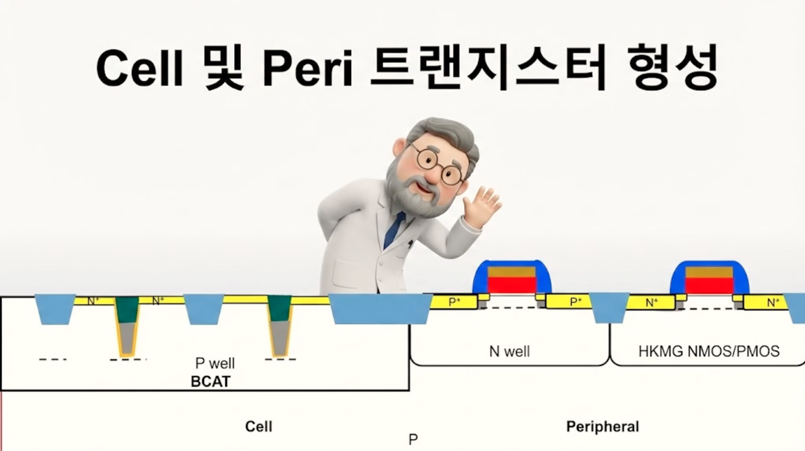
- Cell 쪽에서는 BCAT이, Peri 쪽에는 PMOS, CMOS가 있다.
- Peri에서는 HK metal gate를 사용해서 동작의 스위칭이 빠르게끔 만든다.
2. ILD1 절연층과 Direct Contact
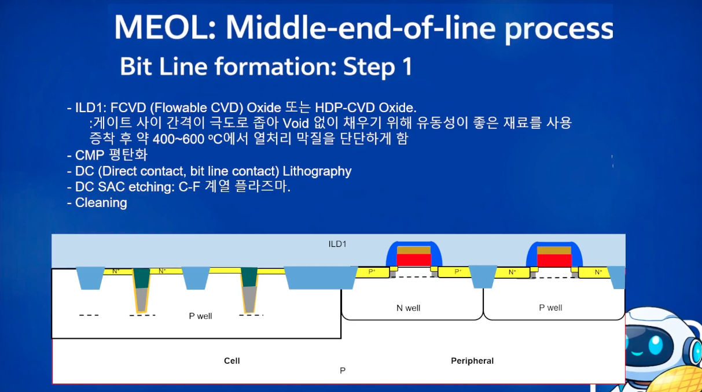
- 첫번째 배선인 Bit line이 올라가기 전에 절연층인 ILD를 깔아줘야한다. Inter layer dielectric
- FCVD는 잘 흘러서 울퉁불퉁한데를 잘 감싸면서 절연할 수 있게 해준다. 아니면 HDP-CVD를 사용한다.
- 절연체를 증착한 이후 울퉁불퉁한 부분은 CMP를 통해서 갈아낸다.
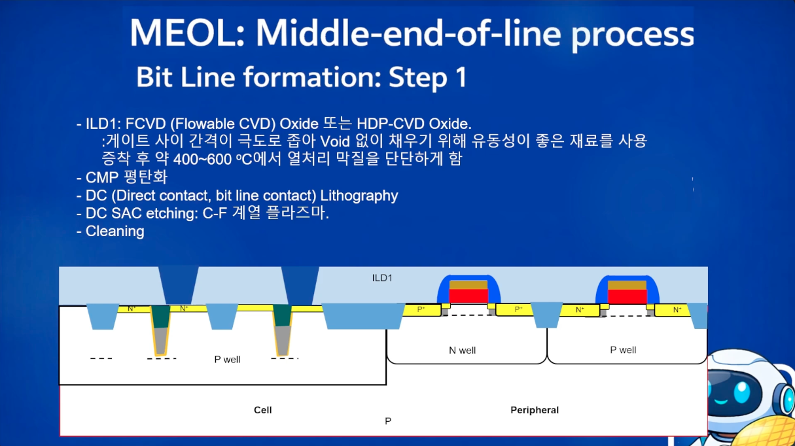
- Direct Contact을 만들기 위해 EUV를 진행해서 리소그래피를 진행한다.
- Contact을 열어주는데 초록색이 노출되어 있지만 자기 정렬이 되기 때문에 저런식으로 된다고 한다. 그리고 cleaning을 진행한다.
- SAC(Self Aligned Contact) 공정은 Si₃N₄는 식각을 잘하지 못하고, SiO₂만 식각을 잘해내기 때문에 좋다.
3. 텅스텐 플러그 형성
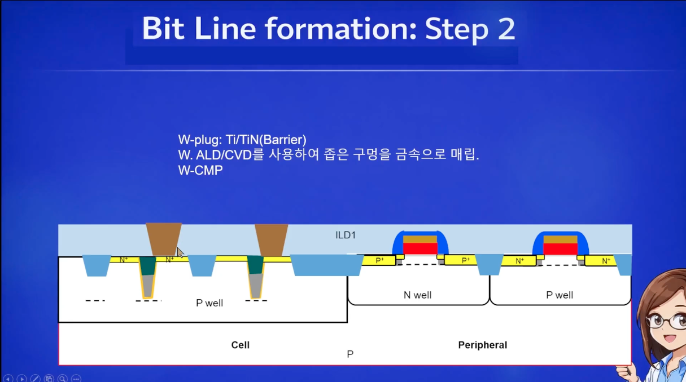
- W 텅스텐을 Ti/TiN을 사용해서 막아준다. 확산을 막기 위해 Ti는 바탕을 접착시켜주는 역할, TiN은 막아주는 역할을 해서 이걸 먼저 깔고 텅스텐을 ALD 혹은 CVD 사용해서 채우게 된다.
- 그리고 나서 금속 CMP로 갈아주고 나면 텅스텐 플러그가 되는거야.
4. Bit Line 형성
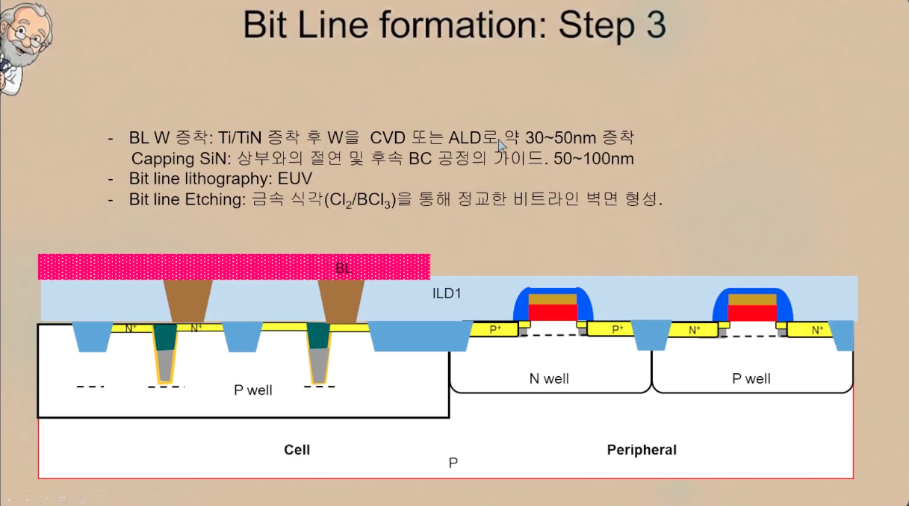
- Bit Line 도 결국 텅스텐인것이고, 그래서 Ti, TiN 증착을 진행한다. 그리고 CVD or ALD 방식으로 증착한다.
- Line 그러니까 선의 형태로 식각을 해줘야하는데 이걸 EUV를 통해서 패터닝을 하고, Etching을 진행한다. 이 때 금속 식각을 진행한다.
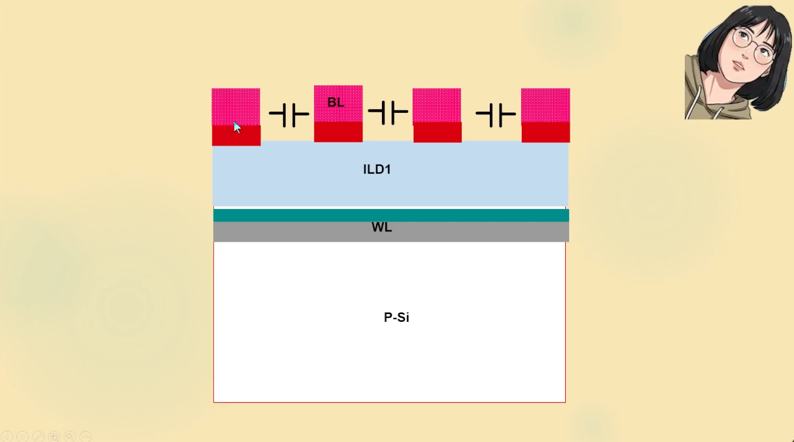
- 옆에서 봤을 때는 이렇게 생긴 것이다.
- 여기에서 문제가 되는 것은 Bit Line 사이에서 발생하는 Capacitance이다. 왜냐하면 절연체를 저 사이에 넣어주게 되면 의도하지 않은 정전용량이 생기게 되거든. 이걸 In-line capacitance라고 한단다.
- 이때 Barried 된 Gate가 Word line이다. 레전드 이걸 이제 알았다. 단면도라서 이게 짧은 건줄 알았는데, 이게 쭉 이어져서 배선인 Word line이 되는 거네.
5. Bit Line Capacitance가 중요한 이유
5-1. Bit Line 주변의 기생용량
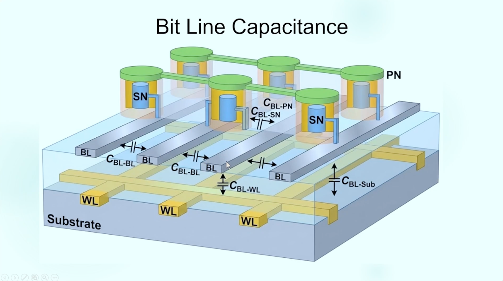
- 난 지금까지 Gate가 Word line인지 전혀 몰랐다.
- 그걸 떠나서 여기에서 설명하고 싶은 것은 제작할 예정인 Capacitor 말고도 기생용량? 이 엄청 생긴다는 것이다. 가장 급한건 근방에 있는 것들끼리 생기지만, Bit Line이랑 World Line이 생기기도 하고 그렇다.
- 여튼간 Bit line capacitance에 대한 얘기이다.
5-2. 센싱이 잘 되는 경우: Small CBL
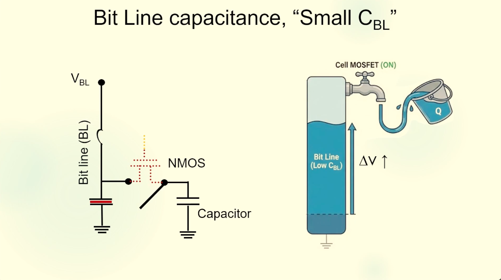
- 이게 왜 중요하냐면 어쨌거나 데이터를 읽어야하고 그건 0,1으로 읽는 것인데, 그 명확성이 이 Bit line capacitance에 달려있기 때문이다.
- DRAM에서는 Transistor와 Capacitor가 딸려 있는 구조이다. 그리고 Bit line에 있는 Capacitor는 원하지 않지만 생겨난 정전용량이다.
- 데이터를 읽는 기준은 Capacitor에 전자가 차있는걸 감지하면 1, 차있지 않으면 0이 되는 것이다.
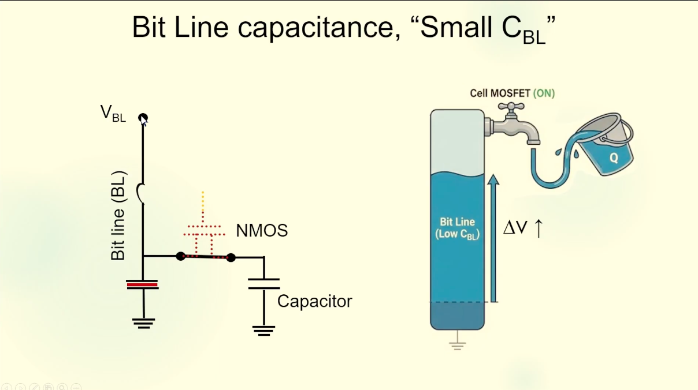
- 이렇게 전압을 가해서 channel이 생기고 연결된 상태에 전자가 안채워져있으면 Bit line의 capacitor에 채워진 전하 만큼 읽힐 것이다.
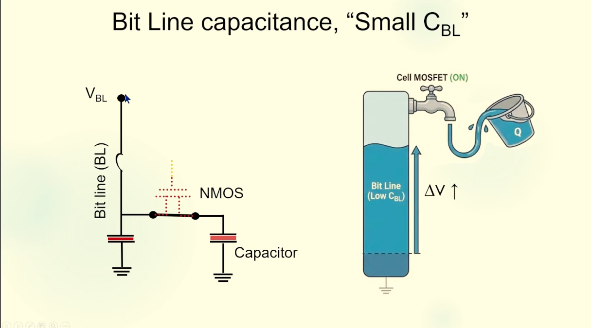
- 만약에 저장된 신호가 1이었다면 두 Capacitor가 합쳐져서 Bit line 전하에 기여할 것이다.
- 이 때 Bit line의 capactior의 전하량이 작으면 영향을 별로 안줘서 상관없다.
- 예를 들어 Bit line에서 1, NMOS이 Capacitor가 50이면 1이거나, 51이거나 이기 때문에 Sensing이 잘된다.
- 물통에 비유하자면 기존에 물통에 적게 들어가 있다면, 넣지 않았을 때랑 많이 넣었을 때가 구분이 잘 된다는 이야기이다.
5-3. 센싱이 어려운 경우: Large CBL
- 이제는 Bit line의 capacitor가 100이라고 한다면, 얘기가 달라진다.
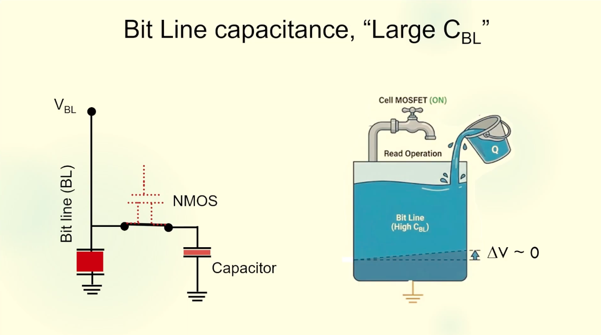
- 이미 Bit line capacitor가 큰 상태면 연결된 상태여도 NMOS의 capacitor 값이 적으니 센서로 감지하기가 어렵다. 센싱이 잘 안되고 구분이 잘 안된다는 의미이다.
- 결국 우리는 이러한 이유에서 Bit line의 Capacitance를 줄이고자 노력한다는 것이다.
6. Air Gap 공정
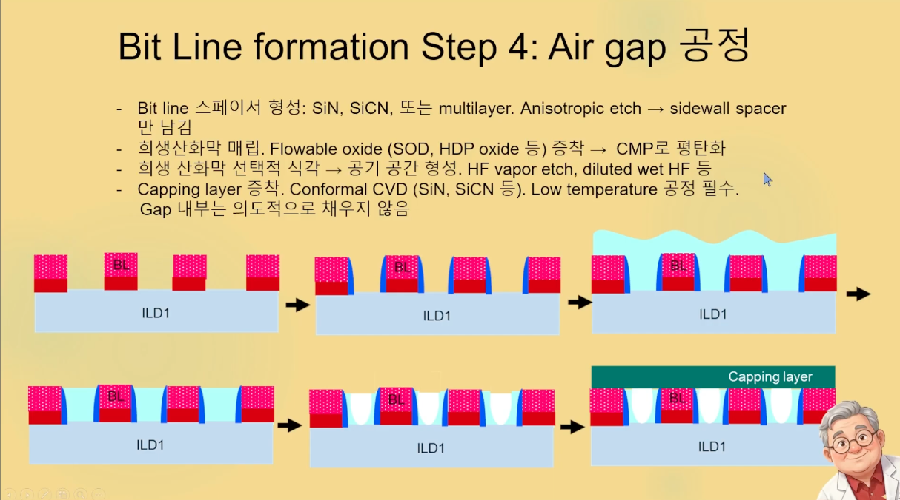
- 예전 공정에서는 위 세 개처럼 그냥 Oxide 절연체로 채워버렸고 이러면 Bit line Capacitance가 존재하게 된다.
- 그래서 사이를 공기를 만들어버릴 생각을 하게 된다. 공기의 유전상수는 1이고, 산화막은 3.9이기 때문에 거의 4배 차이가 난다. 이러면 매우 낮은 Bit line Capacitance를 만들 수 있다.
- 현재는 oxide만을 선택적으로 식각을 진행한다. 이 때 선택적으로 식각하기 위해 불산을 사용하는 Wet etching을 진행한다.
- 이렇게 식각한 다음에 위에 Capping Nitride를 저온에서 덮어주는게 기술이라고 한다.
7. ILD2와 Buried Contact
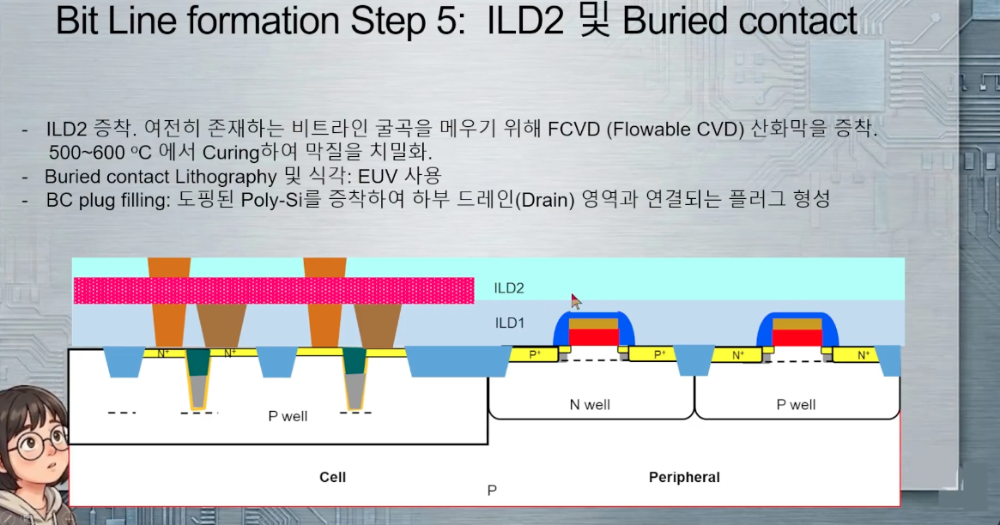
- 이렇게 Bit line을 잘 만들었으면 그 위에 Capcitor를 만들어야 하는데, 그렇게 하기 위해서 절연층을 하나 더 까는 작업이 ILD2이다.
- 이때 잘 흘러내릴 수 있는 oxide의 특성을 사용한 FCVD를 사용하고 나서 500~600도에서 Curing을 진행한다.
- Buried contact은 EUV 기술을 통해서 구멍을 만든다고 한다.
8. Landing Pad 형성
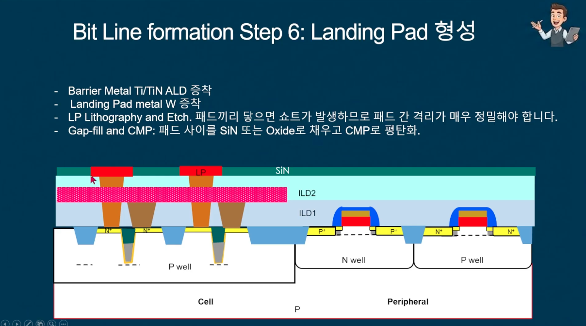
- 뚫어놓은 Buried contact을 토대로 이전에 채웠던 W 을 채우기 위한 Ti, TiN 증착을 한다. 그리고 W를 증착하고 CMP를 진행해서 W 플러그를 만든다.
- 그리고 나서 Landing Pad를 제작한다. Landing Pad는 동일하게 W를 제작하고, 저 LP위에 Capacitor가 들어설 예정이다.
- 그리고 나서 SiN을 증착하고 CMP를 진행해서 절연특성을 가질 수 있게 해준다.
- 여기까지는 Capacitor를 올리기 위한 준비 과정을 거쳤다라고 생각하면 된다.
9. Landing Pad 위에 올라갈 Capacitor
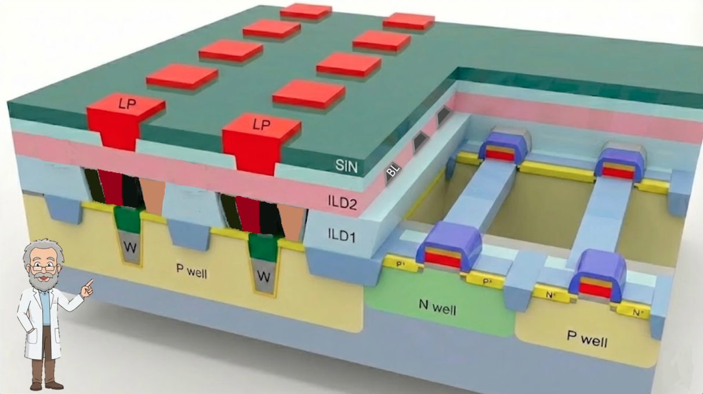
- 이제 여기 Landing pad 위에 Capacitor가 올라가야 한다. 입체적으로 보니까 조금 더 감이 온다.
10. 캐패시터 몰드(Mold)와 서포터 형성
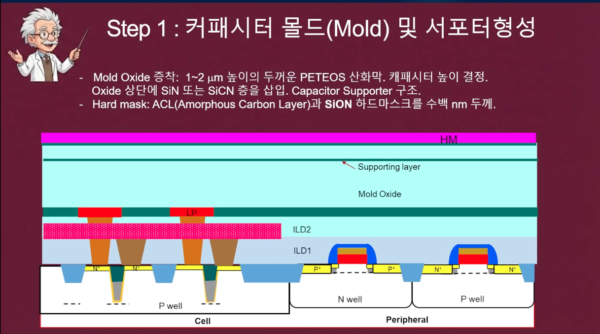
- 두꺼운 Mold oxide를 깔게 되는데 이건 그냥 두꺼운 산화막을 까는 것이고, 이름이 PETEOS인데 이건 그냥 물질이 무엇이냐에 따라서 붙는 말이라고 한다.
- Mold oxide를 뚫고 거기에 Capacitor를 만들텐데 엄청 높이가 길거란 말이지? 그런 상황에서 그냥 세우면 공정 과정 중에 무너질 수 있으니까 Support layer에 질화막 같은 걸 넣어서 버틸 수 있게 해준다는거지. 어떻게 되게 인간적인 생각인 것 같아. 엄청 기술이 아니고 저걸 실행할 수 있는게 엄청난 기술인 것 같은 느낌이야
- Hard mask가 존재하는 이유는 매우 깊은 식각을 할 때 버틸 수 있게 해주기 위함이다. 이때 ACL이나 SiON을 복합적으로 사용하게 된다.
11. 캐패시터 홀 식각
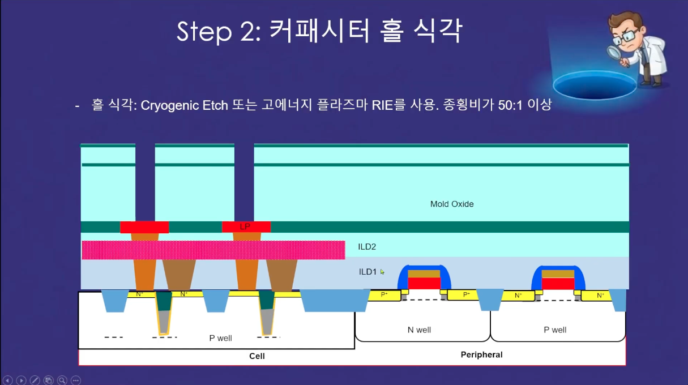
- 이 과정이 정말 극악의 과정이고 칩 하나당 수십억개를 진행해야한다. 여기에서 삐긋하면 바로 불량
12. 제작할 캐패시터의 구조
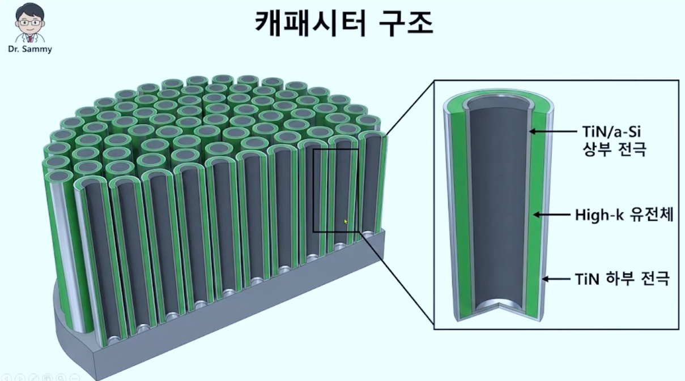
- 제작해야하는 커패시터의 구조이다. 실린더 형태로 생긴 것도 최대한 정전용량을 키우기 위함이다.
- 이 capacitor를 만드는 방법은 여러가지이고, 지금 우리가 배울 것은 그 여러가지 방법 중에 하나인 것이다.
13. 하부전극과 High-k 유전체
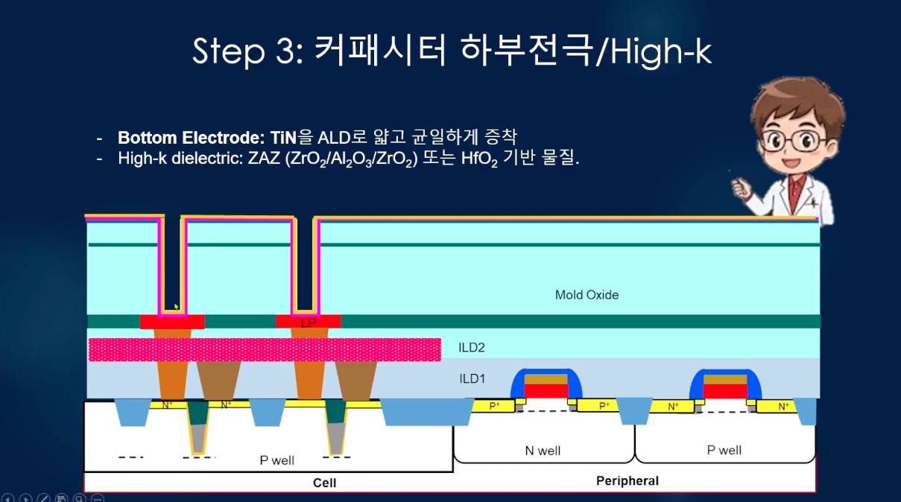
- 일단 먼저 hole에 하부 전극을 증착한다. 그게 그림 상에서는 핑크색으로 보인다. TiN을 사용하고, ALD를 사용해서 얇고 균일하게 증착한다.
- 그 다음 유전체가 올라가야하는데 이 때 최대한 정전용량을 크게 만들어줄 수 있는 High-k dielectric(유전체)을 사용해야 한다. 노란색 층이다. 주로 ZAZ(ZrO₂, Al₂O₃, ZrO₂) or HfO₂ 기반 물질을 사용한다.
- 다시 강조하지만 좁은 공간에서 정전용량을 최대한 확보하고 싶은 상태이다.
14. Stacked Capacitor 공정
14-1. Step 1: 홀 형성까지
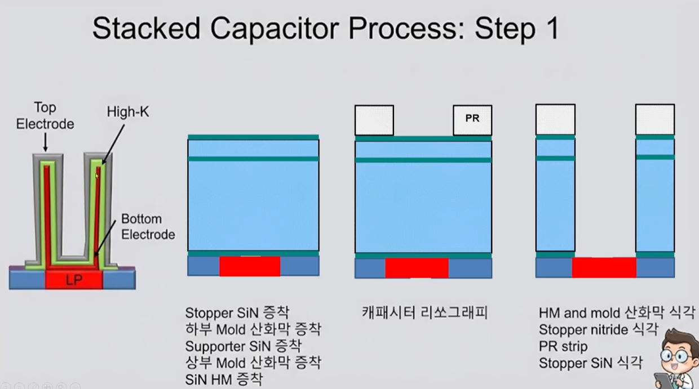
- 연두색이 High-K 유전체이다. 그래서 전극 사이사이가 늘어나게 된다. ㅣ 유전체ㅣ유전체ㅣ 이런 구조로 되기 때문이다. 이 모든건 Capacitance를 늘리기 위함이다.
- 하부 전극은 빨간색이고, 상부 전극은 은색이다.
- 이제 오른쪽을 봐보자. 초록색이 Supporter SiN으로 실린더형 Capacitor를 잡아주는 역할을 하게 된다. 최근에는 저 층이 2~3개로 이루어지기도 함.
- 그리고 Hard Mask를 해두고 깊게 식각을 진행한다. Etch를 멈춰주는 Stopper SiN이 나올때까지 식각하게 되면 Landing Pad에서 멈추게 된다. (Landing Pad는 Capacitor를 올려둘 공간)
14-2. Step 2: 하부전극 TiN과 희생 산화막
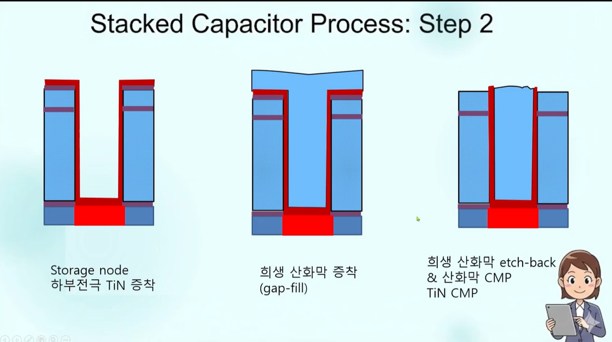
- 식각이 된 공간에 TiN을 ALD 방식으로 증착시키게 된다.
- 그러고 나서 희생 산화막을 증착한다. CMP로 평탄화를 시켜서 희생산화막-TiN-희생산화막-TiN-희생산화막 구조로 만들어준다.
14-3. Step 3: Supporter 패터닝과 산화막 제거
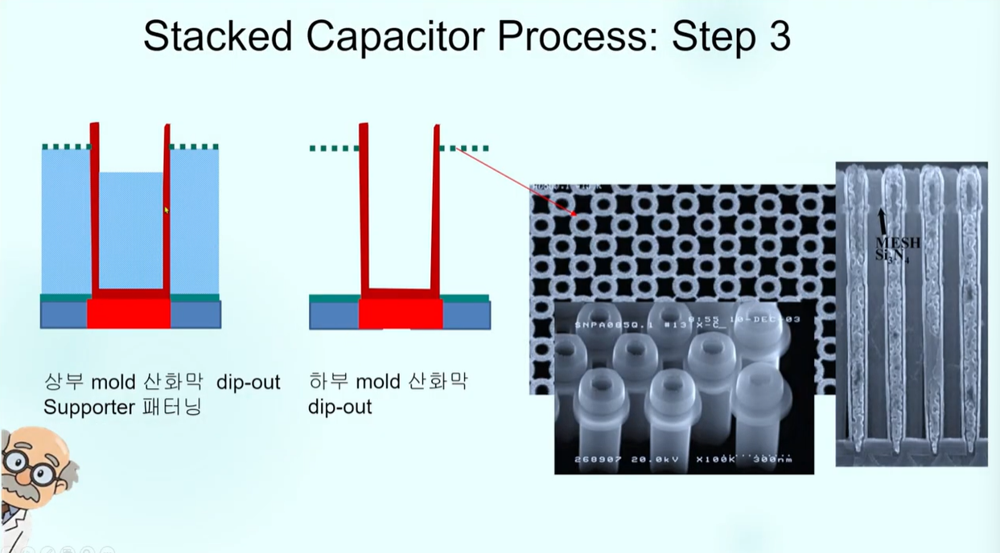
- 희생산화막은 말 그대로 희생산화막이다. 다 걷어내 줄 예정이다.
- 식각을 진행하는데 SiO₂만 식각이 되었으면 하는 것이고, 가운데는 Si₃N₄가 딱히 없으니까 Etch가 되는데, Si₃N₄가 있는 쪽은 식각이 안될 것이다.
- 그래서 리소그래피를 진행해서 Si₃N₄를 다음과 같이 만들어준다. 우측은 SEM 사진인데 마치 장난감 조립할 때 뜯기 전에 생긴 모양처럼 존재하게 된다. 저게 Si₃N₄ 이다.
- 그래서 Supporting Layer가 Capacitor를 잡고 있을 수 있도록 남겨두고 Etch를 하고, 산화막도 함께 Etch 해주게 된다.
14-4. Step 4: 유전체와 상부전극
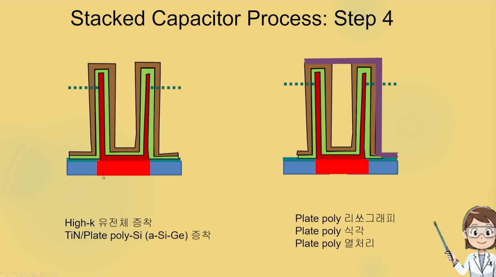
- High-k 유전체를 증착한다. 그리고 TiN은 상부전극으로 증착되는데 이 때 Plate poly도 같이 증착해서 전극 제작을 마무리한다.
- Plate poly-Si는 일단 필요한 곳까지는 냅두고 마지막 순간에는 리소그래피를 진행해서 필요한 부분만 남기고 제거해야한다. 그리고 남은 poly-si는 열처리를 해서 구조를 단단하게 만든다.
15. 실제 DRAM 단면 사례
15-1. Samsung 90nm 512Mb DRAM
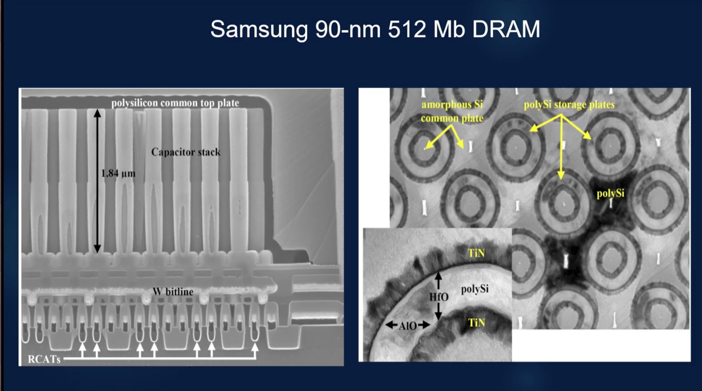
- 90나노 급의 삼성의 DRAM 이다. 10nm급 단면 사진은 찾을 수 없다고 하신다.
- 실제로 Capacitor가 1.84μm의 높이로 길고 좁게 세워져 있는 것을 확인할 수 있다. 그리고 이 사진에서 확인하고자 하는 것은 polysilicon plate가 저런식으로 덮여서 존재한다는 것이다. 당연히 Peri 지역에서는 없어도 되니까 존재하지 않는다.
- 트렌지스터를 보면 RCAT이고, 상당히 예전 것임을 알 수 있다.
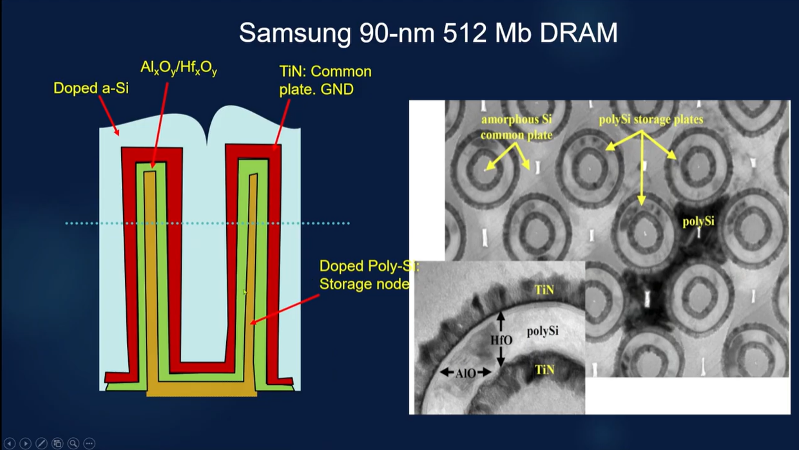
- 사진을 보면 TiN이 각각 하부 전극, 상부 전극임을 알 수 있다.
- 절연체로는 AlO와 HfO가 복합 유전체로 사용되었다. 당연하게도 high-k 물질을 사용한다.
15-2. Samsung 58nm 1Gb DRAM
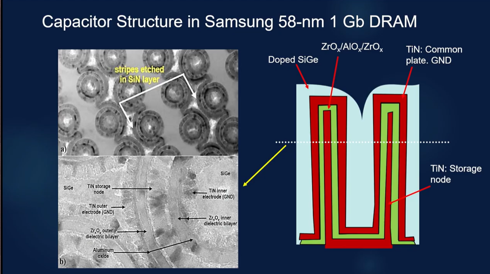
- 이 사진은 조금 더 시간이 지난 58나노 급이다.
- 여기에서는 녹색은 절연체로 ZrO/AlO/ZrO 라는 ZAZ 구조를 사용했다.
- 빨간색은 앞과 동일하게 빨간색을 사용했다.
- 최종적인 Common plate는 SiGe을 사용했다.
15-3. Hynix 54nm 1Gb DRAM
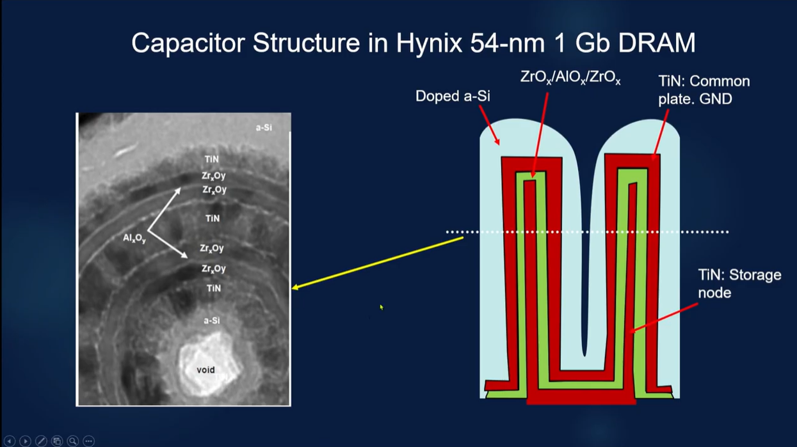
- 이제는 하이닉스의 54나노 급 디램이다.
- TiN - ZrO/AlO/ZrO - TiN 이 구조가 반복되고 있음을 알 수 있다.
16. MEOL 완료와 BEOL로
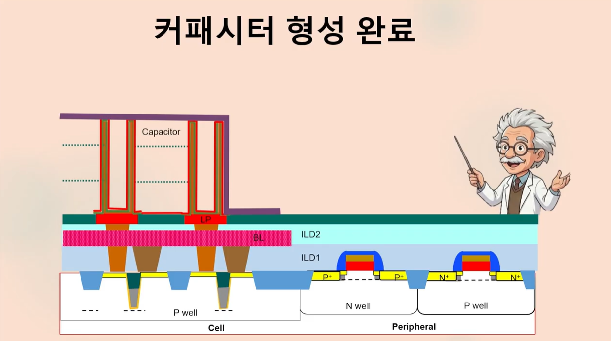
- 전체적인 구조를 정리해보자면 이런식으로 생겼다. 초록색 점선은 Supporting Layer이다.
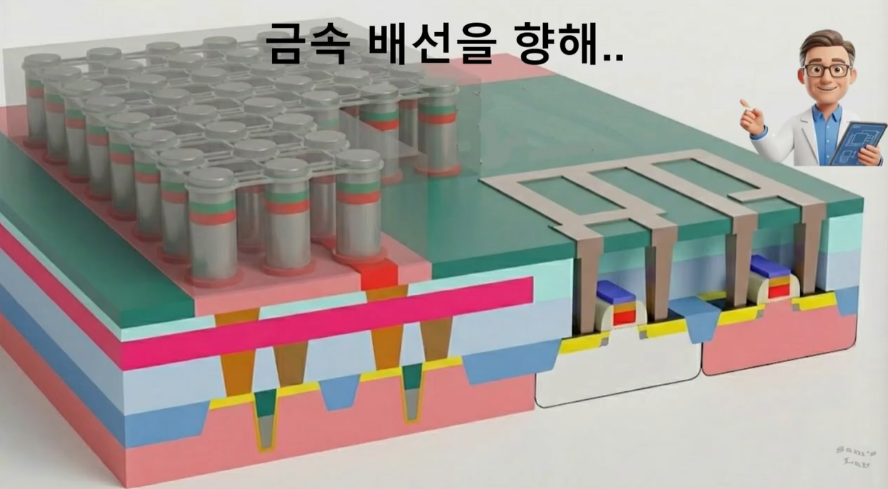
- 그럼 이제 열심히 만들었으니 이 Data를 밖으로 꺼낼 수 있어야 한다. 지금까지는 MEOL이 끝난 것이고, BEOL을 진행해야한다.